Chapter 16 RCT analysis and prediction in bmbstats
In this chapter I will demonstrate how to analyze simple randomized controlled trials (RCTs) from both explanatory and predictive perspectives using bmbstats package and functions. As a refresher, please consider re-reading Causal inference chapter.
16.1 Data Generating Process behind RCT
The following image is re-posted from the Causal inference chapter, outlining Treatment and Non-Treatment effects.

Let’s consider the following RCT DGP. We have two group (Control and Treatment), each with N=10 athletes, measured twice (Pre-test and Post-test) on the vertical jump height, using a measuring device with a known measurement error (i.e. only instrumentation noise; see Validity and Reliability chapter for more info) estimated through validity and reliability studies and equal to 0.5cm. Control group are doing their normal training for 4 weeks, while Treatment group is doing EMS stimulation of their calf muscles on top of their normal training.
Since this is DGP, we will assume there is no treatment effect nor non-treatment effects. Both Control and Treatment groups will experience normal biological variation in their jump height, which is equal to 1.5cm. Please refer to Validity and Reliability chapter for more info about the concepts of true score and measurement error. SESOI for the measured score will be ±5cm (since there is no proportional bias in the measurement, this will also be SESOI for the true score - see Validity and Reliability chapter for more information).
require(tidyverse)
require(bmbstats)
require(cowplot)
set.seed(1667)
n_subjects <- 20
instrumentation_noise <- 0.5
biological_variation <- 1.5
# -------------------------
# Treatment effect
treatment_systematic <- 0
treatment_random <- 0
# Non-treatment effect
non_treatment_systematic <- 0
non_treatment_random <- 0
#-------------------------
RCT_data <- tibble(
Athlete = paste(
"Athlete",
str_pad(
string = seq(1, n_subjects),
width = 2,
pad = "0"
)
),
Group = rep(c("Treatment", "Control"), length.out = n_subjects),
# True score
True_score.Pre = rnorm(n_subjects, 45, 5),
# Treatment effect
Treatment_effect = rnorm(n = n_subjects, mean = treatment_systematic, sd = treatment_random),
Non_treatment_effect = rnorm(n = n_subjects, mean = non_treatment_systematic, sd = non_treatment_random),
# Calculate the change in true score
True_score.Change = if_else(
Group == "Treatment",
# Treatment group is a sum of treatment and non-treatment effects
Treatment_effect + Non_treatment_effect,
# While control group only get non-treatment effects
Non_treatment_effect
),
True_score.Post = True_score.Pre + True_score.Change,
# Manifested score
Manifested_score.Pre = True_score.Pre + rnorm(n_subjects, 0, biological_variation),
Manifested_score.Post = True_score.Post + rnorm(n_subjects, 0, biological_variation),
Manifested_score.Change = Manifested_score.Post - Manifested_score.Pre,
# Measured score
Measured_score.Pre = Manifested_score.Pre + rnorm(n_subjects, 0, instrumentation_noise),
Measured_score.Post = Manifested_score.Post + rnorm(n_subjects, 0, instrumentation_noise),
Measured_score.Change = Measured_score.Post - Measured_score.Pre
)
# Make sure that the Group column is a factor
# This will not create issues with PDP+ICE and ICE plotting later
RCT_data$Group <- factor(RCT_data$Group)
head(RCT_data)
#> # A tibble: 6 x 13
#> Athlete Group True_score.Pre Treatment_effect Non_treatment_e…
#> <chr> <fct> <dbl> <dbl> <dbl>
#> 1 Athlet… Trea… 52.9 0 0
#> 2 Athlet… Cont… 42.4 0 0
#> 3 Athlet… Trea… 49.2 0 0
#> 4 Athlet… Cont… 44.8 0 0
#> 5 Athlet… Trea… 40.0 0 0
#> 6 Athlet… Cont… 42.6 0 0
#> # … with 8 more variables: True_score.Change <dbl>, True_score.Post <dbl>,
#> # Manifested_score.Pre <dbl>, Manifested_score.Post <dbl>,
#> # Manifested_score.Change <dbl>, Measured_score.Pre <dbl>,
#> # Measured_score.Post <dbl>, Measured_score.Change <dbl>Since we have generated this data, we know that there are no treatment nor non-treatment effects (neither systematic, nor random or variable effects). But let’s plot the data.
First let’s plot the Pre-test measured scores (vertical jump) distribution:

And the Post-test:
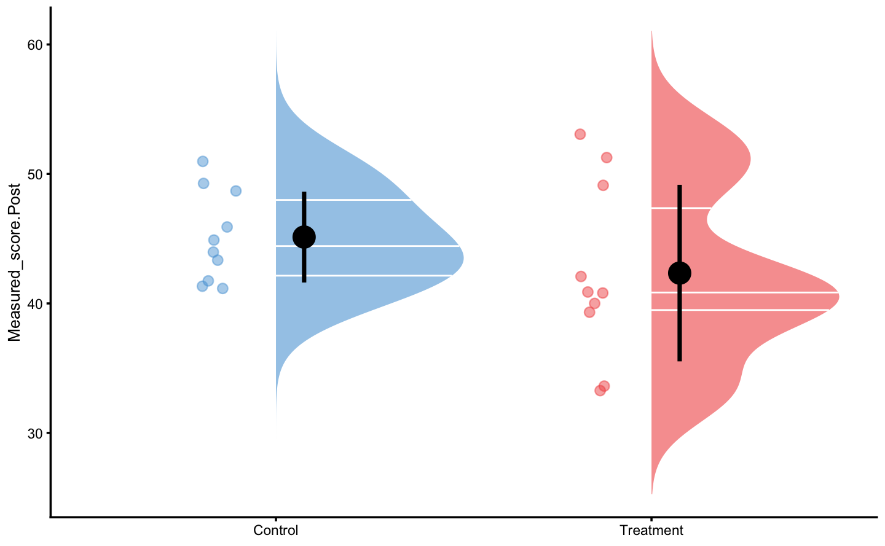
And finally measured change scores:
bmbstats::plot_raincloud_SESOI(
RCT_data,
value = "Measured_score.Change",
groups = "Group",
SESOI_lower = -5,
SESOI_upper = 5
)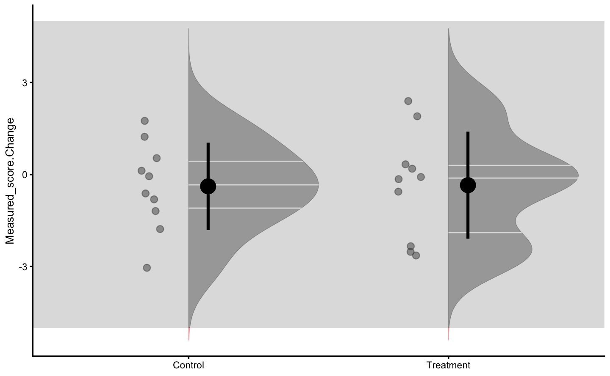
From these graphs we can see that there is no difference between group. We have also selected large SESOI taking into account our a priori knowledge about biological variation and measurement error in the vertical jump height.
Let’s plot the individual change fro athletes from the Treatment group:
bmbstats::plot_pair_changes(
group_a = RCT_data$Measured_score.Pre,
group_b = RCT_data$Measured_score.Post,
group_a_label = "Measured Pre-test",
group_b_label = "Measured Post-test",
SESOI_lower = -5,
SESOI_upper = 5
)
16.2 RCT analysis using bmbstats::RCT_analysis function
To perform RCT analysis explained in the Causal inference chapter, we will use bmbstats::RCT_analysis function. bmbstats::RCT_analysis function has three built-in estimator function: bmbstats::RCT_estimators, bmbstats::RCT_estimators_simple, and bmbstats::RCT_estimators_lm. bmbstats::RCT_estimators is more extensive and involves individual group analysis, while the bmbstats::RCT_estimators_simple only provides estimated treatment and non-treatment effects. bmbstats::RCT_estimators_lm will be explained in the next section.
extensive_RCT <- bmbstats::RCT_analysis(
data = RCT_data,
group = "Group",
treatment_label = "Treatment",
control_label = "Control",
pre_test = "Measured_score.Pre",
post_test = "Measured_score.Post",
SESOI_lower = -5,
SESOI_upper = 5,
control = model_control(seed = 1667)
)
#> [1] "All values of t are equal to 5 \n Cannot calculate confidence intervals"
#> [1] "All values of t are equal to 10 \n Cannot calculate confidence intervals"
extensive_RCT
#> Bootstrap with 2000 resamples and 95% bca confidence intervals.
#>
#> estimator value lower upper
#> SESOI lower -5.0000000000 NA NA
#> SESOI upper 5.0000000000 NA NA
#> SESOI range 10.0000000000 NA NA
#> Control Group Pre-test mean 45.5109521606 4.338522e+01 47.99500924
#> Control Group Pre-test SD 3.9597464864 2.821249e+00 5.39401519
#> Control Group Post-test mean 45.1257775214 4.327530e+01 47.33738237
#> Control Group Post-test SD 3.5092078780 2.612392e+00 4.59657735
#> Treatment Group Pre-test mean 42.6896373231 3.878113e+01 46.84572579
#> Treatment Group Pre-test SD 6.7766398945 4.783839e+00 8.92052081
#> Treatment Group Post-test mean 42.3426726375 3.856045e+01 46.63546378
#> Treatment Group Post-test SD 6.8172485979 4.880090e+00 8.96710016
#> Pre-test pooled SD 5.5498847059 4.348937e+00 7.08556923
#> Pre-test Group difference -2.8213148375 -7.362312e+00 1.66624873
#> Post-test Group difference -2.7831048839 -7.151974e+00 1.84048180
#> Control Group Change mean -0.3851746392 -1.301390e+00 0.35428624
#> Control Group Change SD 1.4244343846 9.592800e-01 2.04852176
#> Control Group Cohen's d -0.0694022776 -2.627647e-01 0.08120665
#> Control Group Change to SESOI -0.0385174639 -1.301390e-01 0.03542862
#> Control Group Change SD to SESOI 0.1424434385 9.592800e-02 0.20485218
#> Control Group pLower 0.0050812820 3.123715e-04 0.04282747
#> Control Group pEquivalent 0.9927461183 9.564951e-01 0.99950198
#> Control Group pHigher 0.0021725997 2.037526e-04 0.01324039
#> Treatment Group Change mean -0.3469646855 -1.363329e+00 0.72633527
#> Treatment Group Change SD 1.7452275994 1.230571e+00 2.23150783
#> Treatment Group Cohen's d -0.0625174583 -2.845506e-01 0.16106127
#> Treatment Group Change to SESOI -0.0346964686 -1.363329e-01 0.07263353
#> Treatment Group Change SD to SESOI 0.1745227599 1.230571e-01 0.22315078
#> Treatment Group pLower 0.0128923459 1.224420e-03 0.03986666
#> Treatment Group pEquivalent 0.9803630085 9.469588e-01 0.99789556
#> Treatment Group pHigher 0.0067446456 6.592220e-04 0.03469121
#> Effect Cohen's d 0.0268246499 -1.142476e+00 1.10911957
#> Systematic effect 0.0382099536 -1.239017e+00 1.40527411
#> Random effect 1.0083680171 -1.142340e+00 1.85676617
#> Systematic effect to SESOI 0.0038209954 -1.239017e-01 0.14052741
#> SESOI to Random effect 9.9170142553 -1.104973e+01 149.46811634
#> pLower 0.0003713043 1.345150e-12 0.99988780
#> pEquivalent 0.9992167407 -9.960108e-01 1.00000000
#> pHigher 0.0004119550 1.014997e-12 0.99983149We can also plot the estimators bootstrap distributions:

If we use bmbstats::RCT_estimators_simple, we will get much more condensed output:
simple_RCT <- bmbstats::RCT_analysis(
data = RCT_data,
group = "Group",
treatment_label = "Treatment",
control_label = "Control",
pre_test = "Measured_score.Pre",
post_test = "Measured_score.Post",
SESOI_lower = -5,
SESOI_upper = 5,
estimator_function = bmbstats::RCT_estimators_simple,
control = model_control(seed = 1667)
)
#> [1] "All values of t are equal to 5 \n Cannot calculate confidence intervals"
#> [1] "All values of t are equal to 10 \n Cannot calculate confidence intervals"
simple_RCT
#> Bootstrap with 2000 resamples and 95% bca confidence intervals.
#>
#> estimator value lower upper
#> SESOI lower -5.0000000000 NA NA
#> SESOI upper 5.0000000000 NA NA
#> SESOI range 10.0000000000 NA NA
#> Systematic effect 0.0382099536 -1.239017e+00 1.4052741
#> Random effect 1.0083680171 -1.142340e+00 1.8567662
#> Systematic effect to SESOI 0.0038209954 -1.239017e-01 0.1405274
#> SESOI to Random effect 9.9170142553 -1.104973e+01 149.4681163
#> pLower 0.0003713043 1.345150e-12 0.9998878
#> pEquivalent 0.9992167407 -9.960108e-01 1.0000000
#> pHigher 0.0004119550 1.014997e-12 0.9998315
As can be seen, the analysis correctly identified no treatment effect. There is an issue with random treatment effects estimation since is demonstrates distribution with two peaks. This effect is due to random treatment effect being zero and the way the root of the squared differences is calculated to avoid irrational numbers (i.e. taking root of negative number).
There are additional graphs that can be produced. All graphs can take control = plot_control parameter to setup plotting options as explained in the previous chapters.
Control group Pre- and Post-test distribution:

Treatment group Pre- and Post-test distribution:
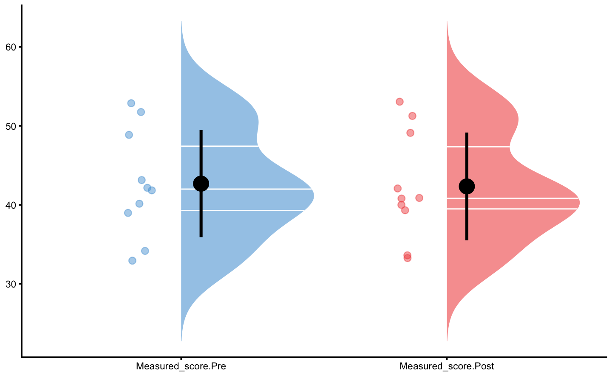
Control change graph:
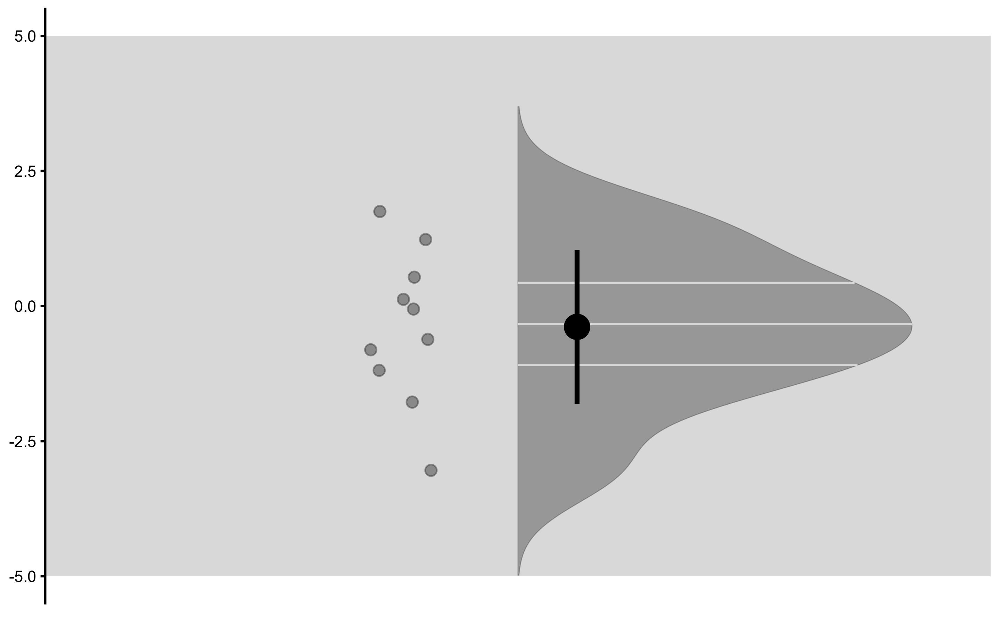
Treatment change graph:

Change graph:

Individual changes in the Control group:
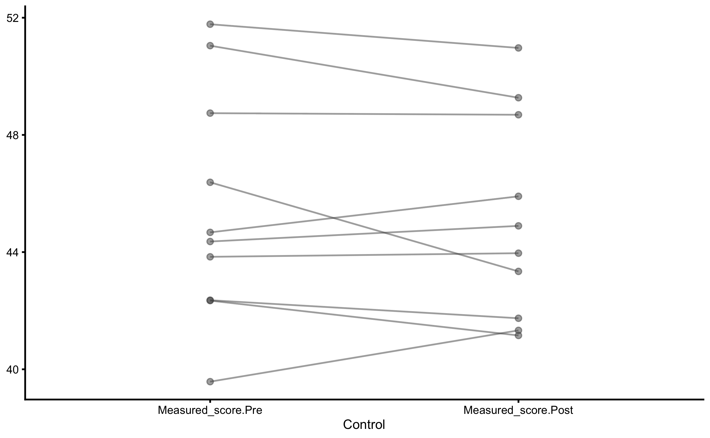
Individual changes in the Treatment group:
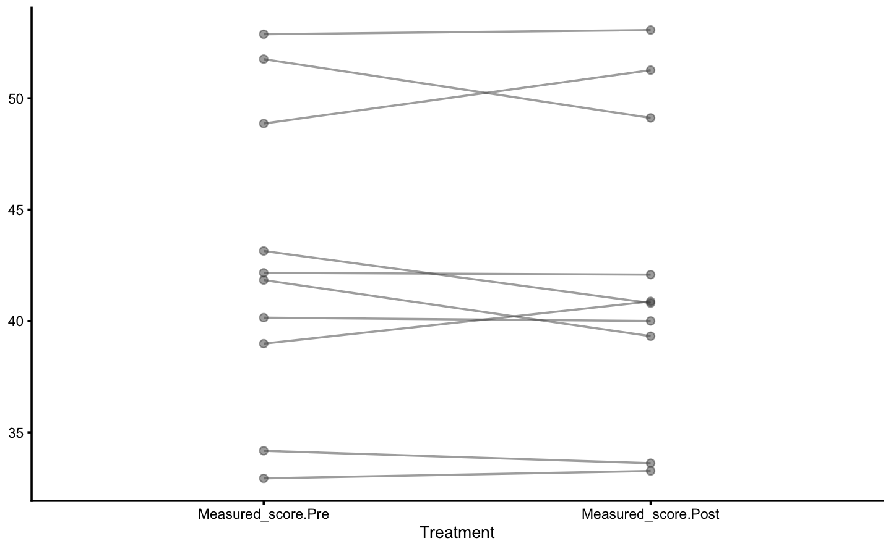
Distribution of the change scores:
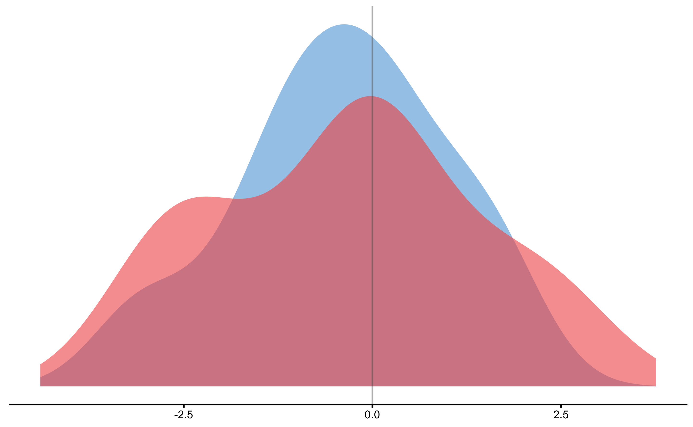
Treatment effect distribution:
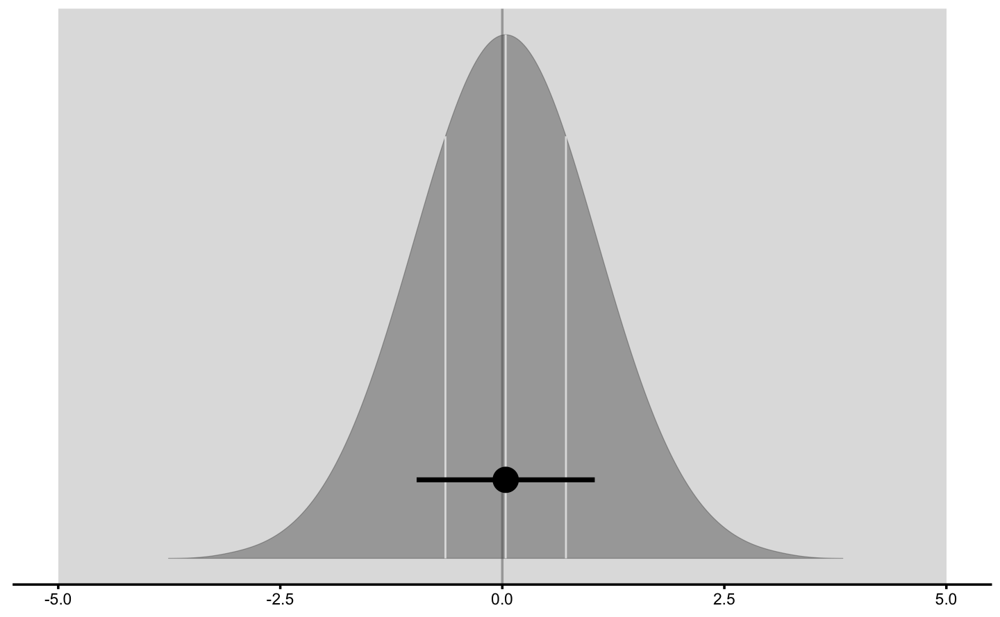
And finally, adjusted treatment responses:
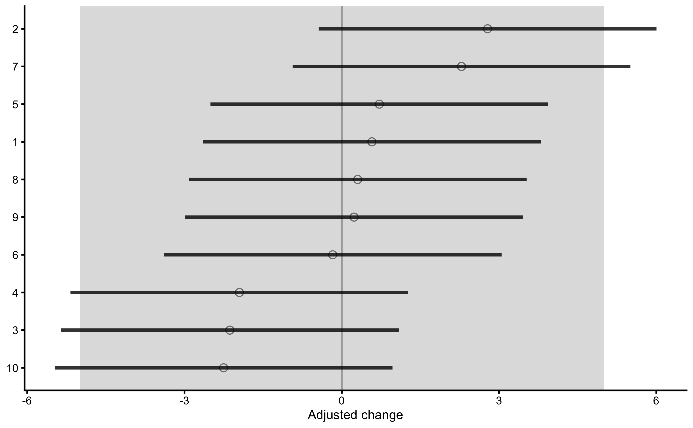
The adjusted treatment responses are calculated by deducting mean Control group change from individual change in the Treatment group (i.e. adjusted change). Error-bars represent 95% confidence intervals (i.e. SDC) using change SD of the Control group.
The data used to create this graph can be found in the returned object:
head(simple_RCT$extra$treatment_responses)
#> id group pre_test post_test change SDC change_lower
#> 11 1 Treatment 52.87665 53.06613 0.1894841 3.222294 -3.0328104
#> 12 2 Treatment 48.86917 51.26538 2.3962116 3.222294 -0.8260828
#> 13 3 Treatment 41.83908 39.31947 -2.5196029 3.222294 -5.7418974
#> 14 4 Treatment 43.14467 40.80646 -2.3382079 3.222294 -5.5605023
#> 15 5 Treatment 32.93471 33.26669 0.3319806 3.222294 -2.8903138
#> 16 6 Treatment 34.17358 33.61544 -0.5581425 3.222294 -3.7804369
#> change_upper adjusted_change adjusted_change_lower adjusted_change_upper
#> 11 3.4117785 0.5746587 -2.6476357 3.796953
#> 12 5.6185061 2.7813863 -0.4409082 6.003681
#> 13 0.7026915 -2.1344283 -5.3567227 1.087866
#> 14 0.8840866 -1.9530332 -5.1753277 1.269261
#> 15 3.5542751 0.7171553 -2.5051392 3.939450
#> 16 2.6641520 -0.1729678 -3.3952623 3.049327We can also plot the un-adjusted treatment responses:

Let’s re-create this graph using bmbstats::observations_MET function since that function also allows us to set Type I error rates and confidence for plotting.
treatment_group <- filter(
RCT_data,
Group == "Treatment"
)
control_group <- filter(
RCT_data,
Group == "Control"
)
treatment_responses <- bmbstats::observations_MET(
observations = treatment_group$Measured_score.Change - mean(control_group$Measured_score.Change),
observations_label = treatment_group$Athlete,
# Use control group change as measurement error
measurement_error = sd(control_group$Measured_score.Change),
# Degrees of freedom from the reliability study. Use `Inf` for normal distribution
df = nrow(control_group) - 1,
SESOI_lower = -5,
SESOI_upper = 5,
# Will not use Bonferroni adjustment here
alpha = 0.05,
# No adjustment in CIs for plotting
confidence = 0.95
)
plot(
treatment_responses,
true_observations = treatment_group$True_score.Change,
control = plot_control(points_size = 5)
) +
xlim(-9, 9)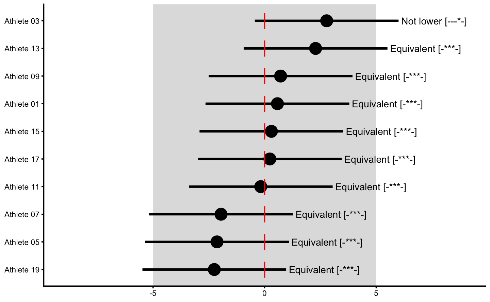
This way, Control group is used as sort-of reliability study (see Repeatability section in the Validity and Reliability chapter) that provides source of information about the non-treatment effect (in this case 0 for both systematic and random components), biological variation and instrumentation noise. This helps us to provide uncertainty intervals around individual treatment (adjusted) effects.
16.3 Linear Regression Perspective
RCT analysis performed with bmbstats::RCT_analysis is the method of differences (i.e. changes). This is similar to the method of differences explained in the Validity and Reliability chapter. Another approach is to utilize linear regression( explained in the Prediction as a complement to causal inference section of the Causal inference chapter). To understand this, let’s depict this RCT data by using Group as predictor and Change score as outcome:
ggplot(
RCT_data,
aes(x = Group, y = Measured_score.Change, color = Group)) +
theme_cowplot(8) +
geom_jitter(width = 0.2) +
scale_color_manual(values = c(Treatment = "#FAA43A", Control = "#5DA5DA"))
If we perform the linear regression, we will get the following:
model1 <- lm(
Measured_score.Change ~ Group,
RCT_data
)
summary(model1)
#>
#> Call:
#> lm(formula = Measured_score.Change ~ Group, data = RCT_data)
#>
#> Residuals:
#> Min 1Q Median 3Q Max
#> -2.6559 -0.9517 0.2315 0.7391 2.7432
#>
#> Coefficients:
#> Estimate Std. Error t value Pr(>|t|)
#> (Intercept) -0.38517 0.50373 -0.765 0.454
#> GroupTreatment 0.03821 0.71238 0.054 0.958
#>
#> Residual standard error: 1.593 on 18 degrees of freedom
#> Multiple R-squared: 0.0001598, Adjusted R-squared: -0.05539
#> F-statistic: 0.002877 on 1 and 18 DF, p-value: 0.9578Intercept in this case (-0.39cm) represents the mean change in the Control group, while slope (GroupTreatment; 0.04cm) represents estimate of the systematic treatment effect (i.e. difference in means).
This can be easily explained visually:
RCT_data$Group_num <- ifelse(
RCT_data$Group == "Treatment",
1,
0
)
ggplot(
RCT_data,
aes(x = Group_num, y = Measured_score.Change)) +
theme_cowplot(8) +
geom_jitter(aes(color = Group), width = 0.2) +
geom_smooth(method = "lm", formula = y~x, se=TRUE) +
scale_color_manual(values = c(Treatment = "#FAA43A", Control = "#5DA5DA")) +
scale_x_continuous(
name = "Group",
breaks = c(0, 1),
labels = c("Control", "Treatment"))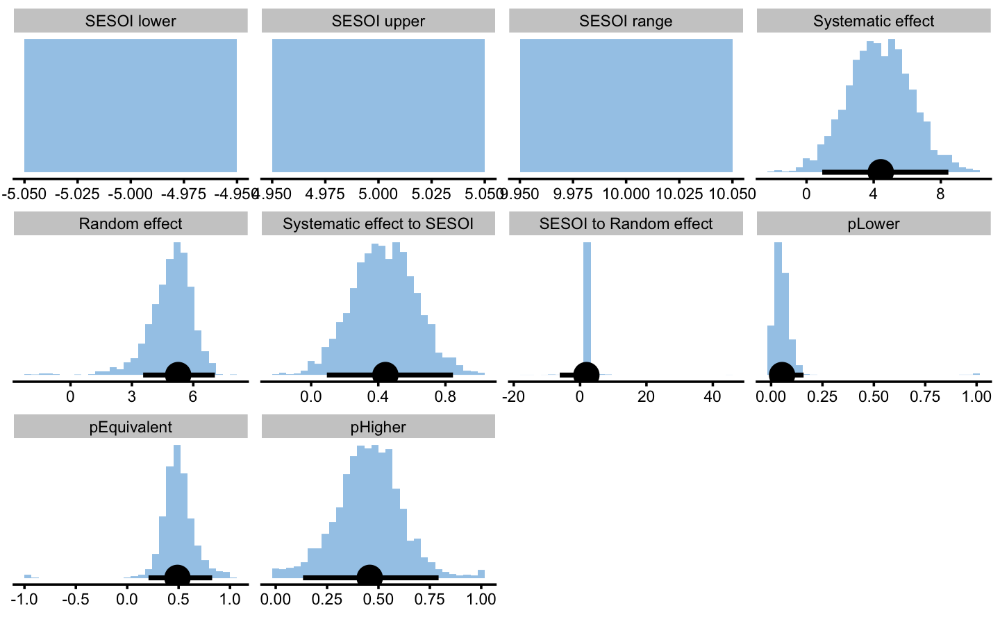
Random components of the treatment and non-treatment effects can be seen as residuals (actually as SD of the residuals) around mean of the group changes. RSE of this model (1.59cm) represents pooled random errors of both Treatment and Control groups. If we perform SD of the residuals for each Group, we will get the following:
SD_summary <- RCT_data %>%
mutate(.resid = residuals(model1)) %>%
group_by(Group) %>%
summarise(`Residual SD` = sd(.resid))
SD_summary
#> # A tibble: 2 x 2
#> Group `Residual SD`
#> <fct> <dbl>
#> 1 Control 1.42
#> 2 Treatment 1.75Estimating random treatment effect is thus equal to \(\sqrt{SD_{Treatment \;group}^2 - SD_{Control \; group}^2}\):
If you compare these regression estimates to those from the bmbstats::RCT_analysis, you will notice they are equal.
But, as alluded in Causal inference chapter, one should avoid using Change scores and rather use Pre-test and Post-test scores. In this case, our model would look visually like this (I have added dashed identity line so Pre-test and Post-test comparison is easier):
ggplot(
RCT_data,
aes(x = Measured_score.Pre, y = Measured_score.Post, color = Group, fill = Group)) +
theme_cowplot(8) +
geom_abline(slope = 1, linetype = "dashed") +
geom_smooth(method = "lm", se = TRUE, alpha=0.2) +
geom_point(alpha=0.8) +
scale_color_manual(values = c(Treatment = "#FAA43A", Control = "#5DA5DA")) +
scale_fill_manual(values = c(Treatment = "#FAA43A", Control = "#5DA5DA"))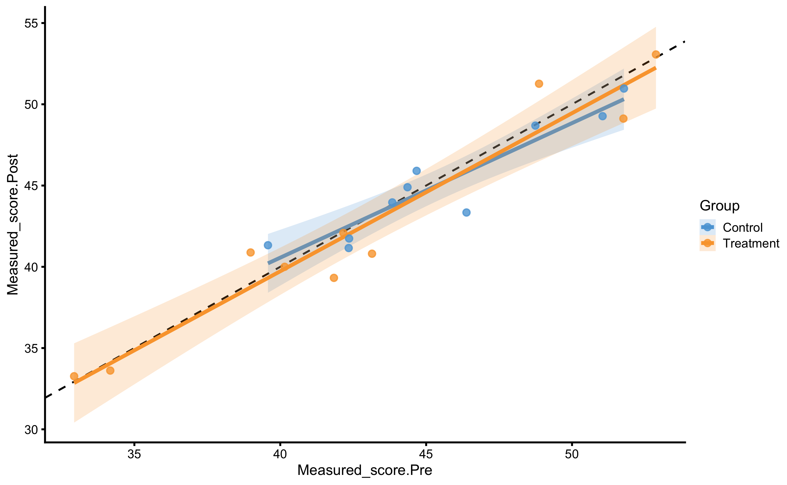
And estimated linear regression model:
model2 <- lm(
Measured_score.Post ~ Measured_score.Pre + Group,
RCT_data
)
summary(model2)
#>
#> Call:
#> lm(formula = Measured_score.Post ~ Measured_score.Pre + Group,
#> data = RCT_data)
#>
#> Residuals:
#> Min 1Q Median 3Q Max
#> -2.60014 -1.01512 0.04426 0.93174 3.13880
#>
#> Coefficients:
#> Estimate Std. Error t value Pr(>|t|)
#> (Intercept) 2.52854 3.12937 0.808 0.43
#> Measured_score.Pre 0.93598 0.06786 13.793 1.16e-10 ***
#> GroupTreatment -0.14242 0.73977 -0.193 0.85
#> ---
#> Signif. codes: 0 '***' 0.001 '**' 0.01 '*' 0.05 '.' 0.1 ' ' 1
#>
#> Residual standard error: 1.598 on 17 degrees of freedom
#> Multiple R-squared: 0.9236, Adjusted R-squared: 0.9146
#> F-statistic: 102.7 on 2 and 17 DF, p-value: 3.22e-10In this model, Pre-test represent covariate. The estimated coefficient for this covariate is 0.94, or very close to 1.
The systematic treatment effect (-0.14cm) can be interpreted as “everything else being equal, changing group from Control to Treatment will result in” effect on the Post-test. Graphically, this represent the vertical gap between the two lines. Please note that in the previous graph, each group is modeled separately, and in this model the lines are assumed to be parallel (i.e. no interaction between the lines - or no interaction between Group and Pre-test). Let us thus plot our model:
RCT_data$.pred <- predict(
model2,
newdata = RCT_data
)
ggplot(
RCT_data,
aes(x = Measured_score.Pre, y = Measured_score.Post, color = Group, fill = Group)) +
theme_cowplot(8) +
geom_point(alpha=0.8) +
geom_line(aes(y = .pred)) +
scale_color_manual(values = c(Treatment = "#FAA43A", Control = "#5DA5DA")) +
scale_fill_manual(values = c(Treatment = "#FAA43A", Control = "#5DA5DA"))
As can be seen from the figure, lines are almost identical, but more importantly, they are now parallel.
To estimate random treatment effect, we can use residuals SD for each group yet again.
SD_summary <- RCT_data %>%
mutate(.resid = residuals(model2)) %>%
group_by(Group) %>%
summarise(`Residual SD` = sd(.resid))
SD_summary
#> # A tibble: 2 x 2
#> Group `Residual SD`
#> <fct> <dbl>
#> 1 Control 1.32
#> 2 Treatment 1.75This concept was a bit hard for me to wrap my head around as well. Residuals are something we cannot explain with our model (be it using simple mean with the method of differences, or using linear regression model with Group and Pre-test). Everything we can explain with the model can be thus seen as systematic effect. Thus, the thing that is left is unexplained variance. This variance is due to biological variation, instrumentation error and random non-treatment effects (which are zero in this example), as well as random treatment effects (which are also zero in this example).
This approach is implemented in bmbstats::RCT_estimators_lm function that we can use in bmbstats::RCT_analysis to get bootstrap CIs:
regression_RCT <- bmbstats::RCT_analysis(
data = RCT_data,
group = "Group",
treatment_label = "Treatment",
control_label = "Control",
pre_test = "Measured_score.Pre",
post_test = "Measured_score.Post",
SESOI_lower = -5,
SESOI_upper = 5,
estimator_function = bmbstats::RCT_estimators_lm,
control = model_control(seed = 1667)
)
#> [1] "All values of t are equal to 5 \n Cannot calculate confidence intervals"
#> [1] "All values of t are equal to 10 \n Cannot calculate confidence intervals"
regression_RCT
#> Bootstrap with 2000 resamples and 95% bca confidence intervals.
#>
#> estimator value lower upper
#> SESOI lower -5.0000000000 NA NA
#> SESOI upper 5.0000000000 NA NA
#> SESOI range 10.0000000000 NA NA
#> Systematic effect -0.1424169958 -1.545188e+00 1.6146987
#> Random effect 1.1517164871 -8.277225e-01 1.9466856
#> Systematic effect to SESOI -0.0142416996 -1.545188e-01 0.1614699
#> SESOI to Random effect 8.6826924091 -2.122197e+01 39.5968395
#> pLower 0.0002330614 1.379717e-14 1.0000000
#> pEquivalent 0.9996342091 -9.999971e-01 1.0000000
#> pHigher 0.0001327295 1.787965e-15 1.0000000Let’s now compare the results of the linear regression method with the method of differences (which uses Change score analysis):
compare_methods <- rbind(
data.frame(method = "differences", simple_RCT$estimators),
data.frame(method = "linear regression", regression_RCT$estimators)
)
ggplot(
compare_methods,
aes(y = method, x = value)
) +
theme_bw(8) +
geom_errorbarh(aes(xmax = upper, xmin = lower),
color = "black",
height = 0
) +
geom_point() +
xlab("") +
ylab("") +
facet_wrap(~estimator, scales = "free_x")
Which method should be used? For simple designs, these provide almost identical results. We could perform simulations as we have done in the Validity and Reliability chapter to see the behavior of the estimates, but I will leave that to you as an exercise. I would generally follow the advice by Frank Harrell and avoid the use of the change scores, particularly for more complex designs involving covariates and extra parameters of the treatment (i.e. when treatment is not only TRUE/FALSE but can have a continuous membership function, or some type of the loading parameter, like number of jumps performed and so forth).
16.4 Prediction perspective 1
Using simple linear regression function brings us to the prediction perspective of modeling the RCT data. Rather than estimating DGP parameters, we are interested in predicting individual responses on the unseen data. We can thus use bmbstats::cv_model function to estimate predictive performance of our simple linear regression model. One thing to keep in mind, is that now we are using SESOI to judge the residuals magnitudes, not observed scores (i.e. measured Post-test). Please note that I have used Group column to setup the CV strata - this results in same number of CV observations in each group.
model3 <- cv_model(
Measured_score.Post ~ Measured_score.Pre + Group,
RCT_data,
SESOI_lower = -5,
SESOI_upper = 5,
control = model_control(
seed = 1667,
cv_folds = 3,
cv_repeats = 10,
cv_strata = factor(RCT_data$Group))
)
model3
#> Training data consists of 3 predictors and 20 observations. Cross-Validation of the model was performed using 10 repeats of 3 folds.
#>
#> Model performance:
#>
#> metric training training.pooled testing.pooled mean
#> MBE 2.202681e-14 1.918475e-15 -0.04123424 -0.06466644
#> MAE 1.176009e+00 1.125490e+00 1.47603175 1.47790175
#> RMSE 1.473109e+00 1.403919e+00 1.82619034 1.79036050
#> PPER 9.963039e-01 9.995798e-01 0.99312088 0.96151334
#> SESOI to RMSE 6.788364e+00 7.122918e+00 5.47588047 5.82060839
#> R-squared 9.235673e-01 9.305786e-01 0.88259682 0.86160357
#> MinErr -3.138804e+00 -3.623411e+00 -5.03757174 -2.56189890
#> MaxErr 2.600139e+00 2.890624e+00 3.53991399 2.08918814
#> MaxAbsErr 3.138804e+00 3.623411e+00 5.03757174 3.08675364
#> SD min max
#> 0.91228266 -2.0716103 1.8762924
#> 0.33700044 0.8701076 2.0982105
#> 0.37125297 1.1312614 2.6810220
#> 0.02661372 0.8929713 0.9939017
#> 1.20914378 3.7299209 8.8396899
#> 0.10805679 0.5866306 0.9743506
#> 1.14780901 -5.0375717 0.3235147
#> 0.96885433 -0.4470821 3.5399140
#> 0.76498989 1.7111147 5.0375717As can be seen from the performance results, we have pretty good prediction of the individual responses since our SESOI is pretty large and we do not have any treatment nor non-treatment effects.
bmbstats package comes with additional function bmbstats::RCT_predict that uses returned object by bmbstats::cv_model and analyze is from RCT perspective:
prediction_RCT <- RCT_predict(
model3,
new_data = RCT_data,
outcome = "Measured_score.Post",
group = "Group",
treatment_label = "Treatment",
control_label = "Control",
subject_label = RCT_data$Athlete
)
prediction_RCT
#> Training data consists of 3 predictors and 20 observations. Cross-Validation of the model was performed using 10 repeats of 3 folds.
#>
#> Model performance:
#>
#> metric training training.pooled testing.pooled mean
#> MBE 2.202681e-14 1.918475e-15 -0.04123424 -0.06466644
#> MAE 1.176009e+00 1.125490e+00 1.47603175 1.47790175
#> RMSE 1.473109e+00 1.403919e+00 1.82619034 1.79036050
#> PPER 9.963039e-01 9.995798e-01 0.99312088 0.96151334
#> SESOI to RMSE 6.788364e+00 7.122918e+00 5.47588047 5.82060839
#> R-squared 9.235673e-01 9.305786e-01 0.88259682 0.86160357
#> MinErr -3.138804e+00 -3.623411e+00 -5.03757174 -2.56189890
#> MaxErr 2.600139e+00 2.890624e+00 3.53991399 2.08918814
#> MaxAbsErr 3.138804e+00 3.623411e+00 5.03757174 3.08675364
#> SD min max
#> 0.91228266 -2.0716103 1.8762924
#> 0.33700044 0.8701076 2.0982105
#> 0.37125297 1.1312614 2.6810220
#> 0.02661372 0.8929713 0.9939017
#> 1.20914378 3.7299209 8.8396899
#> 0.10805679 0.5866306 0.9743506
#> 1.14780901 -5.0375717 0.3235147
#> 0.96885433 -0.4470821 3.5399140
#> 0.76498989 1.7111147 5.0375717
#>
#> Individual model results:
#>
#> subject group observed predicted residual magnitude counterfactual
#> Athlete 01 Treatment 53.06613 51.87749 -1.18864415 Equivalent 52.01990
#> Athlete 02 Control 41.74203 42.17581 0.43378581 Equivalent 42.03340
#> Athlete 03 Treatment 51.26538 48.12658 -3.13880386 Equivalent 48.26899
#> Athlete 04 Control 44.89588 44.04977 -0.84610959 Equivalent 43.90736
#> Athlete 05 Treatment 39.31947 41.54657 2.22709299 Equivalent 41.68898
#> Athlete 06 Control 41.15527 42.16271 1.00744225 Equivalent 42.02030
#> Athlete 07 Treatment 40.80646 42.76857 1.96211098 Equivalent 42.91099
#> Athlete 08 Control 48.68788 48.15176 -0.53612109 Equivalent 48.00934
#> Athlete 09 Treatment 33.26669 33.21228 -0.05441276 Equivalent 33.35469
#> Athlete 10 Control 45.90508 44.34223 -1.56285495 Equivalent 44.19981
#> Athlete 11 Treatment 33.61544 34.37183 0.75639501 Equivalent 34.51425
#> Athlete 12 Control 43.34150 45.94164 2.60013908 Equivalent 45.79923
#> Athlete 13 Treatment 40.88270 38.87404 -2.00866163 Equivalent 39.01645
#> Athlete 14 Control 50.96896 50.99231 0.02334441 Equivalent 50.84989
#> Athlete 15 Treatment 42.08253 41.84993 -0.23260068 Equivalent 41.99235
#> Athlete 16 Control 49.26936 50.30751 1.03815067 Equivalent 50.16510
#> Athlete 17 Treatment 40.00091 39.96681 -0.03410111 Equivalent 40.10923
#> Athlete 18 Control 41.32829 39.57284 -1.75545843 Equivalent 39.43042
#> Athlete 19 Treatment 49.12101 50.83263 1.71162522 Equivalent 50.97505
#> Athlete 20 Control 43.96351 43.56119 -0.40231815 Equivalent 43.41878
#> pITE pITE_magnitude
#> 0.142417 Equivalent
#> -0.142417 Equivalent
#> 0.142417 Equivalent
#> -0.142417 Equivalent
#> 0.142417 Equivalent
#> -0.142417 Equivalent
#> 0.142417 Equivalent
#> -0.142417 Equivalent
#> 0.142417 Equivalent
#> -0.142417 Equivalent
#> 0.142417 Equivalent
#> -0.142417 Equivalent
#> 0.142417 Equivalent
#> -0.142417 Equivalent
#> 0.142417 Equivalent
#> -0.142417 Equivalent
#> 0.142417 Equivalent
#> -0.142417 Equivalent
#> 0.142417 Equivalent
#> -0.142417 Equivalent
#>
#> Summary of residuals per RCT group:
#>
#> group mean SD
#> Control 1.634246e-14 1.322097
#> Treatment 2.771120e-14 1.753394
#>
#> Summary of counterfactual effects of RCT group:
#>
#> group pATE pVTE
#> Treatment 0.142417 0
#> Control -0.142417 0
#> pooled 0.142417 0The results of bmbstats::RCT_predict contain (1) model performance (also returned from bmbstats::cv_model), (2) individual model results (which contains individual model predictions, as well as counterfactual predictions assuming Group changes from Control to Treatment and vice versa), (3) residuals summary per group (these are our random effects), and (4) summary of counterfactual effects (please refer to Causal inference chapter for more information about these concepts). The extra details that bmbstats::RCT_predict adds on top of bmbstats::cv_model can be found in the prediction_RCT$extra.
Now that we have the more info about the underlying RCT, we can do various plots. Let’s plot the residuals first:

To plot individual model predictions use the following:

Circlets or dots represent observed (i.e. outcome or target variable), and vertical line represent model predictions. Residual between the two is color coded based on the provided SESOI threshold.
By default, prediction plot uses metric = "RMSE" and metric_cv = "testing.pooled" parameters to plot confidence intervals. We can use some other metric returned from bmbstats::cv_model. Let’s use MaxAbsErr (maximum absolute prediction error) from mean testing CV column:

To plot individual bias-variance error decomposition thorough testing CV folds use:

Here we can see which athletes are prediction outliers and generally present issues for the predictive model. Together with the individual predictions, we can use this plot and data to gain more info regarding individual reactions to intervention (i.e. who jumps out from the model prediction).
To gain understanding into counterfactual prediction, we could use PDP and ICE plots. The default variable to be used is the Group, which we can change later:

This plot gives us insights into model prediction for each athlete when the Group variable changes, while keeping all other variables the same. Since this is RCT, this plot can be given counterfactual interpretation. The PDP line (thick red line) represent the average of these individual prediction (ICE lines), and as can be seen, the counterfactual effects of changing group is zero (since the line is parallel) and thus represents expected or systematic effect of the treatment.
Let’s do that for out other variable in the model (with addition of the dashed identity line):
plot(prediction_RCT, "pdp+ice", predictor = "Measured_score.Pre") +
geom_abline(slope = 1, linetype = "dashed")
To plot these individual ICE line for each athlete we can use counterfactual plot:

Since the systematic treatment effect is zero, these are very small. The mean of these individual counterfactual prediction effect is presented in the object printout in the last table as pATE (predicted average treatment effect) and SD of these effects as pVTE (predicted variable treatment effect). In this case, due simple model, the predicted treatment effects are the same, thus the pVTE is equal to zero.
Different way to plot these is to have trellis plot for each individual:

These plots represent strong tool for understanding predictive model performance for the RCT data and study designs.
16.5 Adding some effects
The previous example contained no treatment nor non-treatment effects, only biological variation and instrumentation noise. Let’s now consider different treatment - plyometric training that has systematic effect of 5cm (mean or expected change) and random effect of 5cm. But, since this study is done after the off-season, all athletes experienced systematic effect of 2.5cm increase and random effect of 1cm only by normal training. This represents non-treatment effect.
Biological variation (1.5cm) and instrumentation noise (0.5cm) are still involved in the measured scores.
This is the code to generate the data (i.e. DGP):
set.seed(16)
n_subjects <- 20
# These stay the same
instrumentation_noise <- 0.5
biological_variation <- 1.5
# -------------------------
# Treatment effect
treatment_systematic <- 5
treatment_random <- 5
# Non-treatment effect
non_treatment_systematic <- 2.5
non_treatment_random <- 1
#-------------------------
RCT_data <- tibble(
Athlete = paste(
"Athlete",
str_pad(
string = seq(1, n_subjects),
width = 2,
pad = "0"
)
),
Group = rep(c("Treatment", "Control"), length.out = n_subjects),
# True score
True_score.Pre = rnorm(n_subjects, 45, 5),
# Treatment effect
Treatment_effect = rnorm(n = n_subjects, mean = treatment_systematic, sd = treatment_random),
Non_treatment_effect = rnorm(n = n_subjects, mean = non_treatment_systematic, sd = non_treatment_random),
# Calculate the change in true score
True_score.Change = if_else(
Group == "Treatment",
# Treatment group is a sum of treatment and non-treatment effects
Treatment_effect + Non_treatment_effect,
# While control group only get non-treatment effects
Non_treatment_effect
),
True_score.Post = True_score.Pre + True_score.Change,
# Manifested score
Manifested_score.Pre = True_score.Pre + rnorm(n_subjects, 0, biological_variation),
Manifested_score.Post = True_score.Post + rnorm(n_subjects, 0, biological_variation),
Manifested_score.Change = Manifested_score.Post - Manifested_score.Pre,
# Measured score
Measured_score.Pre = Manifested_score.Pre + rnorm(n_subjects, 0, instrumentation_noise),
Measured_score.Post = Manifested_score.Post + rnorm(n_subjects, 0, instrumentation_noise),
Measured_score.Change = Measured_score.Post - Measured_score.Pre
)
RCT_data$Group <- factor(RCT_data$Group)
head(RCT_data)
#> # A tibble: 6 x 13
#> Athlete Group True_score.Pre Treatment_effect Non_treatment_e…
#> <chr> <fct> <dbl> <dbl> <dbl>
#> 1 Athlet… Trea… 47.4 -3.24 1.17
#> 2 Athlet… Cont… 44.4 3.43 4.57
#> 3 Athlet… Trea… 50.5 4.09 2.74
#> 4 Athlet… Cont… 37.8 12.4 2.15
#> 5 Athlet… Trea… 50.7 0.671 1.87
#> 6 Athlet… Cont… 42.7 12.6 2.78
#> # … with 8 more variables: True_score.Change <dbl>, True_score.Post <dbl>,
#> # Manifested_score.Pre <dbl>, Manifested_score.Post <dbl>,
#> # Manifested_score.Change <dbl>, Measured_score.Pre <dbl>,
#> # Measured_score.Post <dbl>, Measured_score.Change <dbl>Let’s plot the data using Pre-test as predictor (x-axis) and Post-test as the outcome (y-axis). Please remember that this plot provide simple linear regression for each group independently. I will add identity line for easier comparison:
ggplot(
RCT_data,
aes(x = Measured_score.Pre, y = Measured_score.Post, color = Group, fill = Group)) +
theme_cowplot(8) +
geom_abline(slope = 1, linetype = "dashed") +
geom_smooth(method = "lm", se = TRUE, alpha=0.2) +
geom_point(alpha=0.8) +
scale_color_manual(values = c(Treatment = "#FAA43A", Control = "#5DA5DA")) +
scale_fill_manual(values = c(Treatment = "#FAA43A", Control = "#5DA5DA"))
We can see that both Control and Treatment group demonstrated improvements since both lines are above the dashed identity line.
Using simple linear regression we get the following coefficients:
model4 <- lm(
Measured_score.Post ~ Measured_score.Pre + Group,
RCT_data
)
summary(model4)
#>
#> Call:
#> lm(formula = Measured_score.Post ~ Measured_score.Pre + Group,
#> data = RCT_data)
#>
#> Residuals:
#> Min 1Q Median 3Q Max
#> -6.5827 -3.5413 0.3856 2.3547 7.9219
#>
#> Coefficients:
#> Estimate Std. Error t value Pr(>|t|)
#> (Intercept) 13.1094 8.5876 1.527 0.145262
#> Measured_score.Pre 0.7774 0.1902 4.088 0.000767 ***
#> GroupTreatment 4.9265 1.9679 2.503 0.022784 *
#> ---
#> Signif. codes: 0 '***' 0.001 '**' 0.01 '*' 0.05 '.' 0.1 ' ' 1
#>
#> Residual standard error: 4.294 on 17 degrees of freedom
#> Multiple R-squared: 0.6289, Adjusted R-squared: 0.5853
#> F-statistic: 14.41 on 2 and 17 DF, p-value: 0.000219Now the simple linear regression estimated systematic treatment effect of 4.93cm, which is very close to our DGP systematic treatment effect of 5cm.
To estimate random treatment effect, we can use residuals SD for each group:
SD_summary <- RCT_data %>%
mutate(.resid = residuals(model4)) %>%
group_by(Group) %>%
summarise(`Residual SD` = sd(.resid))
SD_summary
#> # A tibble: 2 x 2
#> Group `Residual SD`
#> <fct> <dbl>
#> 1 Control 2.41
#> 2 Treatment 5.39Using bmbstats::RCT_estimators_lm estimator function and bmbstats::RCT_analysis functions, let’s perform the analysis and generate 95% bootstrap confidence intervals:
regression_RCT <- bmbstats::RCT_analysis(
data = RCT_data,
group = "Group",
treatment_label = "Treatment",
control_label = "Control",
pre_test = "Measured_score.Pre",
post_test = "Measured_score.Post",
SESOI_lower = -5,
SESOI_upper = 5,
estimator_function = bmbstats::RCT_estimators_lm,
control = model_control(seed = 1667)
)
#> [1] "All values of t are equal to 5 \n Cannot calculate confidence intervals"
#> [1] "All values of t are equal to 10 \n Cannot calculate confidence intervals"
regression_RCT
#> Bootstrap with 2000 resamples and 95% bca confidence intervals.
#>
#> estimator value lower upper
#> SESOI lower -5.00000000 NA NA
#> SESOI upper 5.00000000 NA NA
#> SESOI range 10.00000000 NA NA
#> Systematic effect 4.92654585 1.082956784 8.7715046
#> Random effect 4.81651919 3.443713578 6.3838094
#> Systematic effect to SESOI 0.49265458 0.108295678 0.8771505
#> SESOI to Random effect 2.07618814 -21.118934945 2.9121218
#> pLower 0.02663292 0.001106225 0.2469677
#> pEquivalent 0.47937140 0.097391976 0.8405754
#> pHigher 0.49399568 0.117750794 0.8878213Here is the estimators bootstrap distribution:
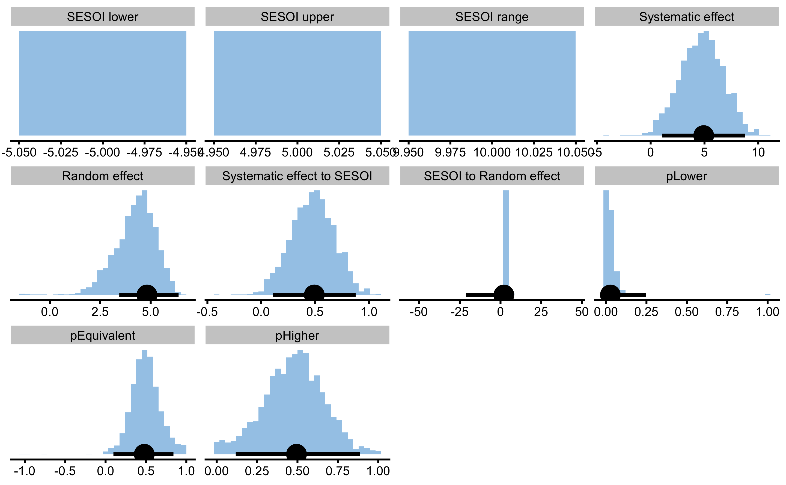
As can be seen from the results, both systematic and random components of the treatment effects were estimated correctly.
Let’s plot the Pre- and Post-Test results for each group (I will let you play and plot other figures as explained in the previous sections):

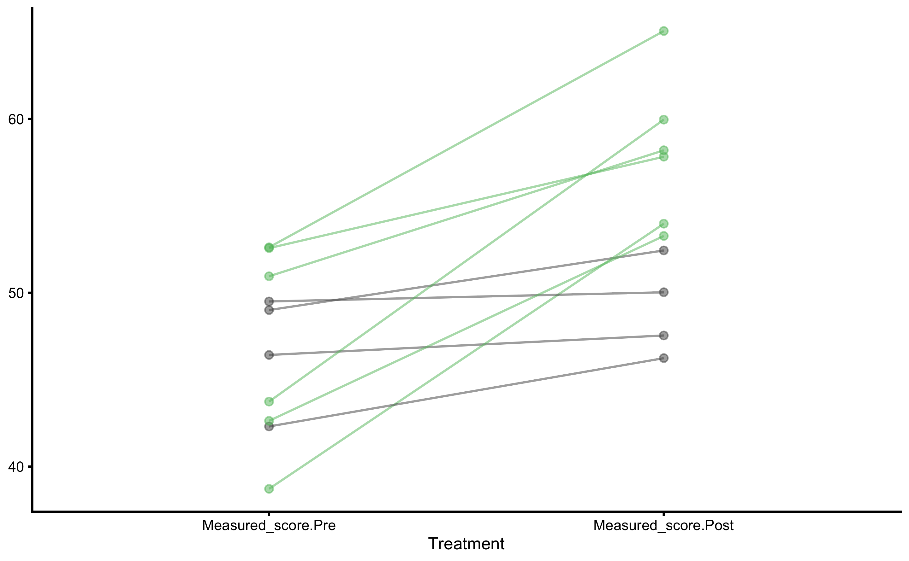
Let’s now plot individual treatment responses with uncertainty intervals:

As explained previously, this type of analysis and plot, uses Control group change score as some type of a proxy to quantify the uncertainty around observed treatment group change scores. Please note that even though we have used linear regression approach to estimate treatment effects, the plots still rely on the change scores.
To check if this plot make sense, we can add the true treatment effects from the DGP using bmbstats::observations_MET function (we can also use bmbstats::observations_MBI function for plotting):
treatment_group <- filter(
RCT_data,
Group == "Treatment"
)
control_group <- filter(
RCT_data,
Group == "Control"
)
treatment_responses <- bmbstats::observations_MET(
observations = treatment_group$Measured_score.Change,
observations_label = treatment_group$Athlete,
# Use control group change as measurement error
measurement_error = sd(control_group$Measured_score.Change),
# Degrees of freedom from the reliability study. Use `Inf` for normal distribution
df = nrow(control_group) - 1,
SESOI_lower = -5,
SESOI_upper = 5,
# Will not use Bonferroni adjustment here
alpha = 0.05,
# No adjustment in CIs for plotting
confidence = 0.95
)
plot(
treatment_responses,
true_observations = treatment_group$True_score.Change,
control = plot_control(points_size = 5)
) +
xlim(-10, 28)
Adjusted treatment response would deduct mean change from the Control group and would show individual effect ONLY with treatment effect (without non-treatment effect). We can use our DGP generated data frame to generate that graph (or to recreate it) and plot true treatment effects:
treatment_responses <- bmbstats::observations_MET(
# Adjustment
observations = treatment_group$Measured_score.Change - mean(control_group$Measured_score.Change),
observations_label = treatment_group$Athlete,
# Use control group change as measurement error
measurement_error = sd(control_group$Measured_score.Change),
# Degrees of freedom from the reliability study. Use `Inf` for normal distribution
df = nrow(control_group) - 1,
SESOI_lower = -5,
SESOI_upper = 5,
# Will not use Bonferroni adjustment here
alpha = 0.05,
# No adjustment in CIs for plotting
confidence = 0.95
)
plot(
treatment_responses,
# The true observation now is the DGP Treatment effect only
true_observations = treatment_group$Treatment_effect,
control = plot_control(points_size = 5)
) +
xlim(-10, 28)
16.6 What goes inside the measurement error (or Control group change or residuals SD)?
As already explained, Control group serves as a counter-factual proxy of what would happen to the treatment group if not-receiving the treatment. SD of Control group change is used to represent an estimate of uncertainty around individual responses. In our RCT data, SD of the Control group measured change is equal to 2.23cm. This is equal to the root of squared sums of non-treatment random effect, biological variation and instrumentation noise. Since biological variation and instrumentation affects the change score twice (at Pre- and Post-test) we get the following:
\[
SD_{control\;change} = \sqrt{2\times biological\;variation^2 + 2\times instrumentation\;noise^2 + non\;treatment\;random\;effect^2}
\]
If we plug our DGP values, we get the following expected SD of the Control group change: 2.45cm. If there is no non-treatment random effect, then SD for the control group would only consist of measurement error.
This measurement error decomposition belongs to the method of differences, but the same error decomposition happens in the SD of the residuals with the linear regression approach.
To demonstrate this, consider random treatment effect estimated using the measured Pre-test and Post-test scores, versus using True scores.
model_true <- lm(
True_score.Post ~ True_score.Pre + Group,
RCT_data
)
summary(model_true)
#>
#> Call:
#> lm(formula = True_score.Post ~ True_score.Pre + Group, data = RCT_data)
#>
#> Residuals:
#> Min 1Q Median 3Q Max
#> -8.945 -1.128 0.299 1.822 6.053
#>
#> Coefficients:
#> Estimate Std. Error t value Pr(>|t|)
#> (Intercept) 13.7253 8.2176 1.670 0.113184
#> True_score.Pre 0.7578 0.1801 4.208 0.000591 ***
#> GroupTreatment 4.6334 1.7272 2.683 0.015736 *
#> ---
#> Signif. codes: 0 '***' 0.001 '**' 0.01 '*' 0.05 '.' 0.1 ' ' 1
#>
#> Residual standard error: 3.764 on 17 degrees of freedom
#> Multiple R-squared: 0.6497, Adjusted R-squared: 0.6085
#> F-statistic: 15.76 on 2 and 17 DF, p-value: 0.0001342The model with measured scores is the model we have used so far (model4), but I am repeating it here for the sake of easier comprehension:
model_measured <- lm(
Measured_score.Post ~ Measured_score.Pre + Group,
RCT_data
)
summary(model_measured)
#>
#> Call:
#> lm(formula = Measured_score.Post ~ Measured_score.Pre + Group,
#> data = RCT_data)
#>
#> Residuals:
#> Min 1Q Median 3Q Max
#> -6.5827 -3.5413 0.3856 2.3547 7.9219
#>
#> Coefficients:
#> Estimate Std. Error t value Pr(>|t|)
#> (Intercept) 13.1094 8.5876 1.527 0.145262
#> Measured_score.Pre 0.7774 0.1902 4.088 0.000767 ***
#> GroupTreatment 4.9265 1.9679 2.503 0.022784 *
#> ---
#> Signif. codes: 0 '***' 0.001 '**' 0.01 '*' 0.05 '.' 0.1 ' ' 1
#>
#> Residual standard error: 4.294 on 17 degrees of freedom
#> Multiple R-squared: 0.6289, Adjusted R-squared: 0.5853
#> F-statistic: 14.41 on 2 and 17 DF, p-value: 0.000219Estimate random treatment effect for each model are the following, we can use residuals SD for each group:
SD_summary_true <- RCT_data %>%
mutate(.resid = residuals(model_true)) %>%
group_by(Group) %>%
summarise(`Residual SD` = sd(.resid))
SD_summary_true
#> # A tibble: 2 x 2
#> Group `Residual SD`
#> <fct> <dbl>
#> 1 Control 1.47
#> 2 Treatment 4.96The SD of the Control group residuals using the True scores should only involve random non-treatment effect, which is in our case equal to 1cm, and SD of the Treatment group residuals should be 5cm.
Let’s see whats the case with the model that uses Measured scores:
SD_summary_measured <- RCT_data %>%
mutate(.resid = residuals(model_measured)) %>%
group_by(Group) %>%
summarise(`Residual SD` = sd(.resid))
SD_summary_measured
#> # A tibble: 2 x 2
#> Group `Residual SD`
#> <fct> <dbl>
#> 1 Control 2.41
#> 2 Treatment 5.39The SD of the Control group residuals using the measured scores should now involve random non-treatment effect (1cm), 2 x biological variation (1.5cm) and 2 x instrumentation noise (0.5cm), which is around \(\sqrt{1^2 + 2*1.5^2 + 2*0.5^2}\), or 2.45cm.
The SD of the Treatment group residuals using the measured scores should now involve random non-treatment effect (1cm), 2 x biological variation (1.5cm), 2 x instrumentation noise (0.5cm), and additional random treatment effect (5cm) which is around \(\sqrt{1^2 + 2*1.5^2 + 2*0.5^2 + 5^2}\), or 5.57cm.
Estimated random treatment effects:
sqrt(SD_summary_measured$`Residual SD`[2]^2 - SD_summary_measured$`Residual SD`[1]^2)
#> [1] 4.816519As can be seen, these are exactly the same. So, using measures scores and SD of control group change or residuals can recover true random treatment effect value.
16.7 Prediction perspective 2
Let’s see what happens when we run this RCT through predictive model.
model5 <- cv_model(
Measured_score.Post ~ Measured_score.Pre + Group,
RCT_data,
SESOI_lower = -5,
SESOI_upper = 5,
control = model_control(
seed = 1667,
cv_folds = 3,
cv_repeats = 10,
cv_strata = factor(RCT_data$Group))
)
prediction_RCT <- RCT_predict(
model5,
new_data = RCT_data,
outcome = "Measured_score.Post",
group = "Group",
treatment_label = "Treatment",
control_label = "Control",
subject_label = RCT_data$Athlete
)
prediction_RCT
#> Training data consists of 3 predictors and 20 observations. Cross-Validation of the model was performed using 10 repeats of 3 folds.
#>
#> Model performance:
#>
#> metric training training.pooled testing.pooled mean
#> MBE -9.947541e-15 3.055367e-15 -0.1404122 -0.02732047
#> MAE 3.175698e+00 3.037705e+00 3.8691755 3.90512133
#> RMSE 3.959134e+00 3.786361e+00 4.7871794 4.73835660
#> PPER 7.666283e-01 8.120334e-01 0.7012521 0.63888951
#> SESOI to RMSE 2.525805e+00 2.641058e+00 2.0889127 2.17362777
#> R-squared 6.289308e-01 6.606104e-01 0.4579491 0.21880124
#> MinErr -7.921899e+00 -1.032365e+01 -10.0942651 -6.76317807
#> MaxErr 6.582672e+00 8.806128e+00 9.2485263 6.05923474
#> MaxAbsErr 7.921899e+00 1.032365e+01 10.0942651 8.02937811
#> SD min max
#> 2.12193361 -3.5145897 3.3371789
#> 0.93683875 2.6186933 6.8884587
#> 0.85876892 3.4284211 7.2937938
#> 0.07928795 0.4413183 0.7862394
#> 0.37022957 1.3710286 2.9167945
#> 0.64551950 -1.5780914 0.7986431
#> 2.33015461 -10.0942651 -2.7453015
#> 2.11053360 0.1401500 9.2485263
#> 1.17919840 5.5787979 10.0942651
#>
#> Individual model results:
#>
#> subject group observed predicted residual magnitude counterfactual
#> Athlete 01 Treatment 47.54084 54.12352 6.5826720 Higher 49.19697
#> Athlete 02 Control 50.47892 47.33454 -3.1443811 Equivalent 52.26108
#> Athlete 03 Treatment 58.19673 57.64224 -0.5544865 Equivalent 52.71569
#> Athlete 04 Control 39.83268 40.93613 1.1034457 Equivalent 45.86267
#> Athlete 05 Treatment 52.43478 56.13132 3.6965427 Equivalent 51.20477
#> Athlete 06 Control 45.34422 45.12752 -0.2166979 Equivalent 50.05407
#> Athlete 07 Treatment 53.97310 48.13585 -5.8372501 Lower 43.20931
#> Athlete 08 Control 48.35425 47.34404 -1.0102111 Equivalent 52.27059
#> Athlete 09 Treatment 65.05732 58.93766 -6.1196617 Lower 54.01111
#> Athlete 10 Control 46.69332 50.18284 3.4895230 Equivalent 55.10938
#> Athlete 11 Treatment 57.82698 58.90031 1.0733333 Equivalent 53.97377
#> Athlete 12 Control 49.16140 48.36452 -0.7968803 Equivalent 53.29107
#> Athlete 13 Treatment 46.24005 50.92561 4.6855567 Equivalent 45.99907
#> Athlete 14 Control 57.44395 54.26840 -3.1755549 Equivalent 59.19494
#> Athlete 15 Treatment 50.02857 56.51530 6.4867253 Higher 51.58875
#> Athlete 16 Control 37.56101 41.57384 4.0128333 Equivalent 46.50039
#> Athlete 17 Treatment 59.95868 52.03678 -7.9218991 Lower 47.11023
#> Athlete 18 Control 49.31810 48.42968 -0.8884198 Equivalent 53.35623
#> Athlete 19 Treatment 53.26809 51.17656 -2.0915325 Equivalent 46.25001
#> Athlete 20 Control 53.52199 54.14833 0.6263431 Equivalent 59.07488
#> pITE pITE_magnitude
#> -4.926546 Equivalent
#> 4.926546 Equivalent
#> -4.926546 Equivalent
#> 4.926546 Equivalent
#> -4.926546 Equivalent
#> 4.926546 Equivalent
#> -4.926546 Equivalent
#> 4.926546 Equivalent
#> -4.926546 Equivalent
#> 4.926546 Equivalent
#> -4.926546 Equivalent
#> 4.926546 Equivalent
#> -4.926546 Equivalent
#> 4.926546 Equivalent
#> -4.926546 Equivalent
#> 4.926546 Equivalent
#> -4.926546 Equivalent
#> 4.926546 Equivalent
#> -4.926546 Equivalent
#> 4.926546 Equivalent
#>
#> Summary of residuals per RCT group:
#>
#> group mean SD
#> Control -9.237121e-15 2.411836
#> Treatment -1.065814e-14 5.386633
#>
#> Summary of counterfactual effects of RCT group:
#>
#> group pATE pVTE
#> Treatment -4.926546 0
#> Control 4.926546 0
#> pooled 4.926546 0The prediction performance in this case is much worse (compared to previous RCT example), since now there are systematic and random treatment and non-treatment effects. Although we can explain the RCT components, we cannot use it to predict individual responses.
Let’s check the individual predictions:

We can now see that certain residuals are larger than SESOI (indicated by green or red color on the figure).
Here is the PDP+ICE plot:

Parallel lines indicate that we predict that each individual will have same treatment effect (indicated by pVTE as well as with the arrows of same length in the counterfactual plot that follows). If we plot PDP+ICE for the measured Pre-test, we will get the following figure:
plot(prediction_RCT, "pdp+ice", predictor = "Measured_score.Pre") +
geom_abline(slope = 1, linetype = "dashed")
Two thin lines indicate two groups and the gap between them represents the systematic treatment effect.
Estimating individual counterfactual effects when switching group:
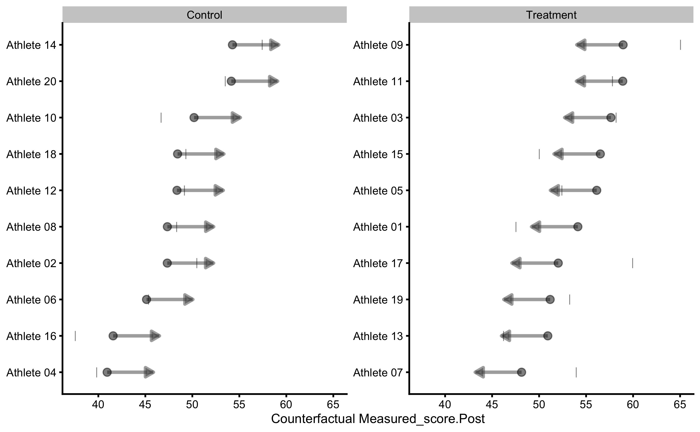
As can be seen, counterfactual plot depicts same treatment effect for every individual.
16.8 Making it more complex by adding covariate
To make this more complex, let’s assume that besides randomizing athletes to Treatment and Control group, we have also measured their lower body strength using relative back squat 1RM. This variable represents our covariate, and we can expect (i.e. we hypothesize) that individuals with higher relative strength will manifest bigger improvements from the plyometric intervention.
The following code represented DGP, where the effects of the training intervention depend on the 1RM squat (i.e. the higher the relative squat, the higher the training intervention). But on top of that, we are going to reduce the improvement based on the initial jump height (i.e. the higher someone jumps, the less improvement over time). It is assumed that squat 1RM and Pre-training jump height are unrelated (independent). Random components of the treatment and non-treatment effects are zero, and the only variance in the measured scores is due to biological noise and instrumentation error.
set.seed(16)
n_subjects <- 20
# These stay the same
instrumentation_noise <- 0.5
biological_variation <- 1.5
# -------------------------
# These are not used in this DGP
# Treatment effect
treatment_systematic <- 0
treatment_random <- 0
# Non-treatment effect
non_treatment_systematic <- 0
non_treatment_random <- 0
#-------------------------
RCT_data <- tibble(
Athlete = paste(
"Athlete",
str_pad(
string = seq(1, n_subjects),
width = 2,
pad = "0"
)
),
Group = rep(c("Treatment", "Control"), length.out = n_subjects),
# Strength covariate
Squat_1RM_relative = rnorm(n_subjects, 1, 0.4),
# True score
True_score.Pre = rnorm(n_subjects, 45, 5),
# Treatment effect
Treatment_effect = (10 - 0.002 * True_score.Pre^2 + 1) * Squat_1RM_relative,
Non_treatment_effect = 15 - 0.005 * True_score.Pre^2,
# Calculate the change in true score
True_score.Change = if_else(
Group == "Treatment",
# Treatment group is a sum of treatment and non-treatment effects
Treatment_effect + Non_treatment_effect,
# While control group only get non-treatment effects
Non_treatment_effect
),
True_score.Post = True_score.Pre + True_score.Change,
# Manifested score
Manifested_score.Pre = True_score.Pre + rnorm(n_subjects, 0, biological_variation),
Manifested_score.Post = True_score.Post + rnorm(n_subjects, 0, biological_variation),
Manifested_score.Change = Manifested_score.Post - Manifested_score.Pre,
# Measured score
Measured_score.Pre = Manifested_score.Pre + rnorm(n_subjects, 0, instrumentation_noise),
Measured_score.Post = Manifested_score.Post + rnorm(n_subjects, 0, instrumentation_noise),
Measured_score.Change = Measured_score.Post - Measured_score.Pre
)
head(RCT_data)
#> # A tibble: 6 x 14
#> Athlete Group Squat_1RM_relat… True_score.Pre Treatment_effect
#> <chr> <chr> <dbl> <dbl> <dbl>
#> 1 Athlet… Trea… 1.19 36.8 9.88
#> 2 Athlet… Cont… 0.950 43.4 6.87
#> 3 Athlet… Trea… 1.44 44.1 10.2
#> 4 Athlet… Cont… 0.422 52.4 2.33
#> 5 Athlet… Trea… 1.46 40.7 11.2
#> 6 Athlet… Cont… 0.813 52.6 4.44
#> # … with 9 more variables: Non_treatment_effect <dbl>, True_score.Change <dbl>,
#> # True_score.Post <dbl>, Manifested_score.Pre <dbl>,
#> # Manifested_score.Post <dbl>, Manifested_score.Change <dbl>,
#> # Measured_score.Pre <dbl>, Measured_score.Post <dbl>,
#> # Measured_score.Change <dbl>To be continued